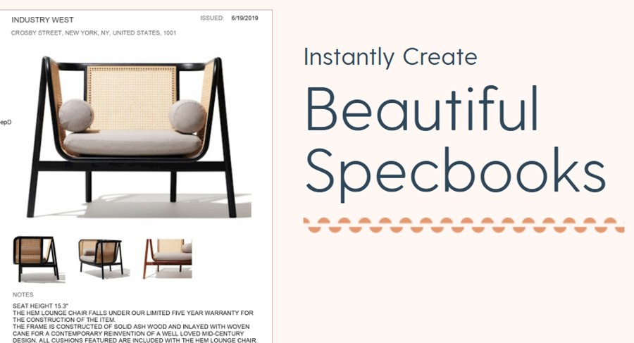

Current
Conditions
Software
Development Lead
Brody Chapellaz
- Phone:
- +1 (204) 557-1610
- Email:
- brody@chapellaz.com
- LinkedIn:
- brodychapellaz
Conditions at Winnipeg
About me: Warning
Hi, I’m Brody. I’m a full-stack developer who enjoys building all kinds of web applications. I’ve led development teams, automated CI/CD pipelines, and built integrations with a wide range of platforms and services.
I like tackling challenging problems, picking up new skills, and turning ideas into software.
Software Development Lead
2023 – Present
- Leads a small dev team
- Helps hire and review developers
- CI/CD automated with Azure DevOps
- Cloud costs cut by $10K+ a year
- Integrations: Stripe, QuickBooks, Slack, Shopify, Revit
- DS Collection launched: thousands of products, a dozen+ brands

- Angular
- ASP.NET
- SQL Server
- React
Also Implemented Stripe Subscription Billing
Software Developer
2021 – 2023
DesignSpecCode reviews · Planning · Data Migrations · and more!
Software Developer DevOps Intern, Varian Medical Systems, 2019 – 2020
ClickTap a tile to reveal its letter
- Built internal tools for software installation diagnostics
- Web-based reporting in C#, ASP.NET and SQL Server
- Delivered tools used globally with cross-functional teams
Red River College
Education
Technologies
Years of experience
Tools and Integrations
Pick a clue!
Click any dollar value to play.Tap a value.
- Git
- Azure DevOps
- Bitbucket
- TeamCity
- Team Foundation Server
- Visual Studio
- VS Code
- SQL Server Management Studio
- Postman
- IntelliJ IDEA
- Slack
- Discord
- HubSpot
- SendGrid
- eWebinar
- Figma
- Azure OpenAI
- Autodesk Revit
- Azure Storage Explorer
- Stripe
- Shopify
- QuickBooks
- Google Analytics
- Mixpanel
- Heap
Welcome to my page! Turn the TV on with the red button. Welcome to my page! The red button turns the TV off and on.
Use CH ▲ ▼ or the number keys to change channels, or GUIDE to see them all.
BACK returns to the last channel, and INFO shows this again.
The TV has sound: + − and mute adjust it.
Welcome to my page! The power button below turns the TV on. Welcome to my page! The power button below turns the TV off and on.
Swipe the picture up and down to change channels, or use ▼ CH ▲. Channel 00 is a guide to them all.
The TV has sound: − VOL + adjusts it.
The remote further down the page has the other keys; its INFO key shows this again.